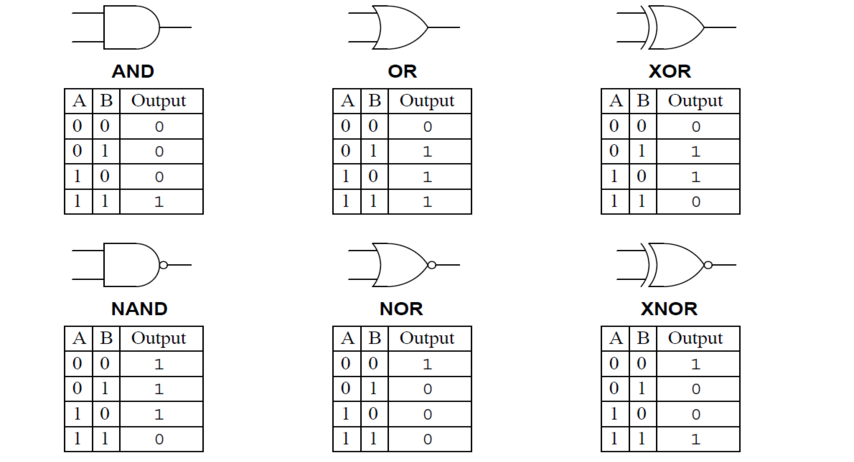

Hardware & software
Logic gates


Fetch-execute cycle
- PC contains address of the next instruction to be fetched.
- This address is copied to the MAR via the address bus.
- The instruction of the address is copied into the MDR temporarily.
- The instruction in the MDR is then placed in the CIR.
- The value in the PC is incremented by 1, pointing the next instruction to be fetched.
- The instruction is finally decoded and then executed.
Input devices
Two-dimensional scanners
Document is placed on a glass panel.
A bright light illuminates the document.
A scan head moves across the document until the whole page is scanned. And image of the document is produced and sent to a lens using a series of mirrors.
The lens focuses the document image.
The focused image now falls onto a charge couple device (CCD) which consists of a numbers of integrated circuits.
Software produces a digital image from the electronic form.
Optical Character Recognition (OCR) is a software which converts scanned documents into a text file format.
If the original document was a photo/image, then the scanned image forms an image file such as JPEG.
Three-dimensional scanners
3D scanners can scan solid objects and produce a three-dimensional image. Scanners take images at several points, x, y and z (lasers, magnetic, white light).
The scanned images can be used in Computer Aided Design (CAD) or to a 3D printer to produce a working model.
Barcode scanner
Barcode is read by a red laser or red LED. Light is reflected back off the barcode; dark areas reflect little light which allows the bars to be read. Reflected light is read by sensors (photoelectric cells). Pattern is generated which is converted to digital.
Digital cameras
Controlled by microprocessor which automatically adjusts the shutter speed, focus the image, etc. Photo is captured when light passes through the lens onto a light sensitive cell. Cell is made up of pixels. Number of pixels determines size of the file.
Microphones
Used to input sound to a computer. When a microphone picks up sound, a diaphragm vibrates producing an electric signal. The signal goes to a sound card and is converted into digital values and stored in computer. Voice recognition, voice is detected and converted into digital.
Output devices
Inkjet printers
- Data from document sent to printer driver.
- Printer driver ensures data is in correct format.
- Check made by printer driver that chosen printer is available.
- Data is sent to printer, stored in a temporary memory (printer buffer).
- Sheet of paper is fed; sensor detects if paper is available in paper tray.
- Print head moves across paper printing text/image, four ink colours sprayed in exact amount.
- Paper is advanced so next line is printed.
- Repeated until buffer is empty.
- Once it is done, printer send an interrupt to the processor (request for more data to be sent).
Laser printers
Use dry powder ink (toner) and static electricity to produce text and images.
- Data from document sent to printer driver.
- Printer driver ensures data is in correct format.
- Check made by printer driver that chosen printer is available.
- Data is sent to printer, stored in a temporary memory (printer buffer).
- Printing drum is given a positive charge; as the drum rotates, a laser beam is scanned across it removing the positive charge leaves negatively charged areas which match the text/image.
- Drum is then coated with positively charged toner, it only sticks to negatively charged parts of the drum.
- A negatively charged sheet is rolled over the drum.
- Toner on the drum now sticks to the paper to produce copy of page.
- Paper finally goes through a fuser (set of heated rollers); heat melts the ink so it is permanent.
- Discharge lamp removes all electric charge from the drum, ready to print next page
Memory, storage devices & media
Random access memory (RAM)
RAM is used to store data. The data stored is volatile. It can be writted to or read from and the contents from the memory can be changed. Larger the RAZ size, the faster the computer will operate. As RAM becomes full, the processor has to continually access the hard drive to overwrite old data on RAM with new data.
Read only memory (ROM)
ROM is used to store instruction. The data stored is Non-volatile and can only be read, cannot be changed.
Hard disk drives (HDD)
Data is stored in a digital format on the magnetic surface of the disks (platter). It is stored on the surfaces in sector and tracks. HDD have a very slow data access compared to RAM.
Solid state drive (SSD)
Unlike HDD there are no moving parts and all the data is received at the same time. Data is stored by controlling the movement of electrons within the NAND chips, as 1's and 0's. It is non-volatile.
Advantages of SSD over HDD:
High & low level languages
High-level language
High-level languages are easier to read and write as it uses language closest to human language. Making it easier to debug and maintain.
Low-level language
Low-level language uses binary instructions that computer understands. Hence, it is machine code
Translators
We require translators to convert High-level language to binary before a computer can use it.
Types of translators:
Compilers
It translates a program written in high-level language into machine code.
Interpreter
They are used when a program is being developed. It executes a high-level language program a statement at a time.
Assembler
We require assemblers to convert low-level language program into machine code. It is used for general use
Syntax errors
When program is being compiled, if any syntax errors are found no translated program is produced. Instead, a list of all errors in program is produced. A programmer is required to correct the program and recompile it. When a program is being interpreted, the interpreter preforms the action until syntax error is found. The programmer is then alerted to the place in the program where error was found. The error is corrected and interpretation continues.